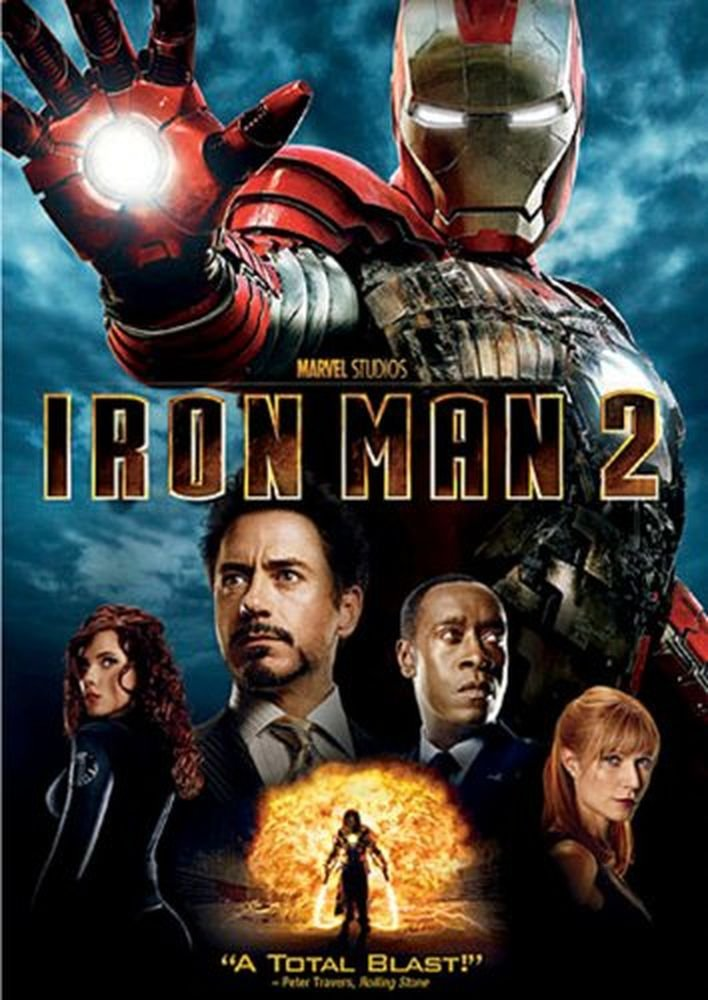

|  | |
| Playtime | Not Played |
| Last Activity | 5/28/2013 10:59:31 |
| Added | 4/24/2025 6:00:16 |
| Modified | 4/30/2025 3:24:08 |
| Completion Status | Not Played |
| Library | PlayStation |
| Source | PlayStation |
| Platform | Sony PlayStation 3 |
| Release Date | 4/29/2010 |
| Community Score | 50 |
| Critic Score | 47 |
| User Score | |
| Genre | Action-adventure |
| Developer | Gameloft Griptonite Games High Voltage Software Sega Studios San Francisco |
| Publisher | Gameloft SEGA |
| Feature | Single Player |
| Links | Wikipedia IMDb |
| Tag | [People] artist: Matthew Butler [People] composer: David Earl [People] composer: Maxime Goulet (Gameloft composer) [People] composer: Paul Lipson [People] director: Kevin Boyle [People] director: Kyle Brink [People] producer: Edward Tucker [People] programmer: Gregg Broxterman [People] writer: Matt Fraction |
Iron Man 2 is an action-adventure video game loosely based on the 2010 film of the same name. It was released in Australia on April 29, 2010, Europe on April 30, and in North America on May 4 for Xbox 360, Nintendo DS, Wii, PlayStation 3, and PlayStation Portable. Published by Sega, the game was developed by Sega Studios San Francisco for PlayStation 3 and Xbox 360, Griptonite Games for Nintendo DS, High Voltage Software for Wii and PlayStation Portable, and by Gameloft for iOS (released on May 3) and BlackBerry PlayBook (released on August 25). A Microsoft Windows version was planned, but it was cancelled.
The game has an original story written by The Invincible Iron Man author, Matt Fraction. The game takes place after the film, although the iOS and BlackBerry versions follow the film's plot. The game features the voices of Don Cheadle and Samuel L. Jackson, reprising their respective roles as War Machine and Nick Fury.
Players can play as either Iron Man or War Machine, each with their own unique style. While Iron Man is sleeker and relies much more on energy weapons, War Machine is outfitted with ballistic weaponry and tougher armor. Iron Man can choose from multiple suits of armour, including Marks II through VI. Players can customize upgrades and weaponry on the armor. Weapons can also be switched during gameplay. Flight control has been improved upon since the first game, as has melee combat, allowing players to get near to the ground. AI was also updated from the previous title. New enemies have been included, and new strategies are now available in combat.
In the Wii/PlayStation Portable version, simplified graphics, different combat systems, and different missions are added. Flying across levels was removed, instead letting Iron Man hover or walk across the level. The point of view was also changed. Also included are "Tech Trophies", collectibles which can be used as upgrades, while "Ammo Cases" are used to supply ammunition.
The game begins with Iron Man defending the Dataspine, an archived version of J.A.R.V.I.S., from attackers. However, an EMP is dropped, disabling him. Three hours earlier, Tony Stark had recorded a journal message in which he mentions the Roxxon Energy Corporation, and how they tried to duplicate the Iron Man armor without success. Tony is then interrupted by James Rhodes, who says that there is trouble at Stark Archives. Following the EMP bomb, the power reserves in Iron Man's armor activate, and upon recovering, Iron Man learns that Roxxon is behind the attack. He grimly decides that he should destroy the Dataspine to keep Roxxon from getting the archives. Outside, Rhodey, in his War Machine armor, intercepts some Roxxon dropships.
Iron Man makes contact with S.H.I.E.L.D. director Nick Fury, who informs him that separatists under the command of General Shatalov have seized control of a Tesla facility. During Iron Man's escort of S.H.I.E.L.D. helicopter forces, they are attacked by a battle platform called the Roxxon Armiger. After destroying it, Iron Man and War Machine head to a battlecruiser and destroy it, learning the Armiger was remote-controlled. They discover that Shatalov is working with the terrorist group Advanced Idea Mechanics to create the Crimson Dynamo suit. Upon learning that the suit is being developed at a power plant in Siberia, Fury reveals that he has sent Natasha Romanoff, the Black Widow, to spy on the plant.
At the plant, Shatalov makes contact with A.I.M.'s Kearson DeWitt, who tells him that there is a spy in his ranks, displeased that he has brought S.H.I.E.L.D. to their front door. Shatalov gives orders to prep the Crimson Dynamo armor and then informs his men that their connection with A.I.M. is now severed. Iron Man finds and protects Natasha from Shatalov's men and a S.H.I.E.L.D. transport is sent to their location. Natasha is extracted while Iron Man and War Machine battle Shatalov in his Crimson Dynamo armor. The defeated Shatalov reveals that A.I.M. was behind the theft of J.A.R.V.I.S.'s AI, and are planning to use it to create Ultimo.
The team learns that Kearson DeWitt was behind the attack led by Shatalov and that he had previously worked at Stark's Theoretical Weapons Division until Stark shut it down. Aside from DeWitt working on the prototype of the arc reactor, Pepper Potts also reveals that he had a secret project called PROTEAN. Inside an A.I.M. base, DeWitt uses his PROTEAN technology to merge with an enormous metal suit and become Ultimo. With the merge complete, DeWitt has his men upgraded with PROTEAN implants. Arriving at the base, War Machine battles PROTEAN drones while Iron Man searches for DeWitt. J.A.R.V.I.S. detects Ultimo shortly after the base is secured with help from S.H.I.E.L.D.
Meanwhile, the S.H.I.E.L.D. Helicarrier is attacked, and Iron Man protects it from DeWitt's drones. When War Machine defeats an Arc Armiger dropped on the Helicarrier, Iron Man decides to reprogram it. Using the reprogrammed Armiger, Iron Man and War Machine assault an A.I.M. base in Malaysia. When the giant Ultimo arrives, War Machine disables some of its arc reactors while Iron Man fights the DeWitt/Ultimo within. Upon defeating DeWitt/Ultimo, Iron Man learns that the effects on DeWitt are irreversible. War Machine finishes Ultimo off while the Helicarrier rams it. Afterward, J.A.R.V.I.S. tells Stark to promise him not to let anyone gain access to his programming again.
Iron Man 2 was written by The Invincible Iron Man writer Matt Fraction and Sega creative director Kyle Brink, with additional writing by Sega writer Phil Campbell and Sega associate producer Stephen Frost. The game features an exclusive song recorded by Lamb of God, "Hit the Wall", along with a soundtrack composed by other bands.
Unlike the first Iron Man game, Iron Man is not voiced by Robert Downey Jr., but Eric Loomis, who would go on to voice the character in the animated series The Avengers: Earth's Mightiest Heroes. Don Cheadle and Samuel L. Jackson reprised their roles as War Machine/James Rhodes and Nick Fury, respectively, making them the only actors to have reprised their film roles in the video game version. Additional voices include Steve Blum and Phil LaMarr, with the former voicing Mauler and Ghost, and the latter providing additional dialogue for War Machine; animator Eric Goldberg voicing A.I.M. soldiers; and John Eric Bentley providing additional dialogue for Nick Fury.[citation needed]
The game received mixed reviews, with Metacritic scores of 44 and 45 out of 100 for the PlayStation 3 and Xbox 360 versions, respectively. There is division among critics as to whether or not the game is an improvement over its predecessor. IGN gave a score of 5.1 for the PS3 and Xbox 360 version, 5.5 for the Wii version and 4.9 for the PSP version. They felt the game was an improvement upon the original, but did not quite hit the mark, citing the game's short campaign, poor graphics, repetitive gameplay, and a lack of challenge, which made the upgrade system unnecessary; "Iron Man 2 isn't terrible, but it rarely gets exciting. It's fun to blow up tanks and trucks, and Iron Man has all his powers like his repulsor shots and his unibeam laser. But the whole game feels repetitive. You see the same enemies over and over again, and even though they get bigger guns and more armor as you go, the gameplay stays the same. The PSP version features even fewer guys than the Wii game, so a lot of times areas just seem empty because there aren't artillery trucks rolling up and dumping out bad guys".
Michael Lafferty from GameZone gave it a 4.5, suggesting that players should "watch the movie, read the comic book, but pass on the game". GameSpot also gave it a 4.5, arguing that "every decent element is overshadowed by stumbles and shortcomings. It should be thrilling and fun to take to the sky in a superpowered battle suit, but Iron Man 2 crashes to the Earth with a dull thud". Empire magazine gave it one star, calling it a "rare failure for Sega", and stating that the experience felt like an early PlayStation 1 game.